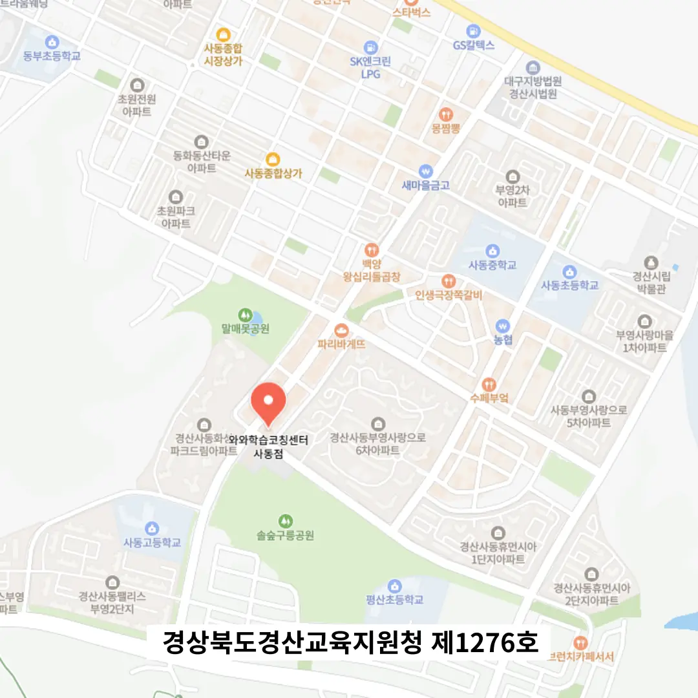
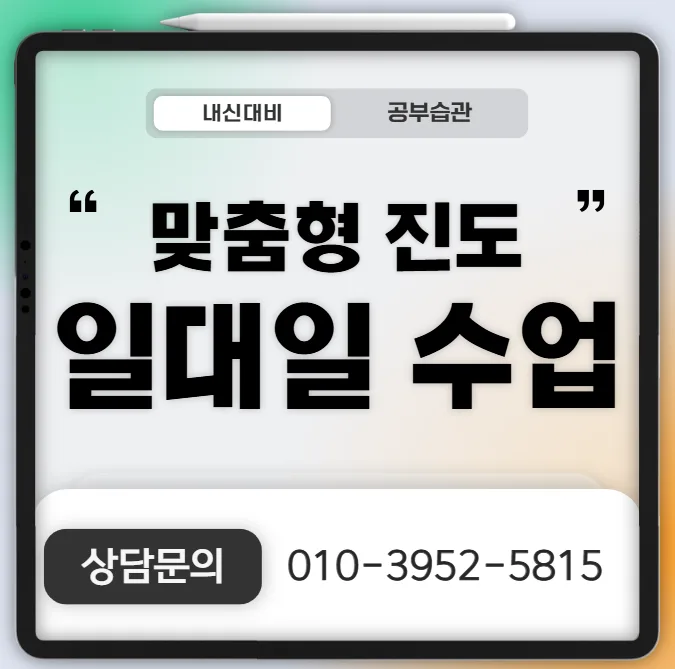

첫째로 주변 사동 과학학원의 교육 철학과 목표가 자녀의 학습 스타일에 맞는지 확인해요. 둘째로 강사의 경력과 전공 분야가 실제 교육 현장에서 검증된 사례를 가지고 있는지 살펴봐요. 셋째로 수업 시간표와 학부모 상담 가능 시간을 비교해 아이가 부담 없이 참여할 수 있는지를 판단해요. 넷째로 사동 과학학원의 시설과 학습 도구가 최신 교육 트렌드에 부합하는지 현장 방문으로 직접 확인해요. 다섯째로 수강료 대비 제공되는 교육 콘텐츠와 사후 관리 프로그램이 충분히 만족스러운지를 평가해요. 마지막으로 주변 학부모들의 후기와 실제 성적 향상 사례를 종합해 최종 결정을 내리면 도움이 될 거예요.
사동은 아이들의 연령별 학습 태도가 뚜렷하게 구분돼 있어 맞춤형 교육이 중요해요. 초등 저학년은 시각적 자료와 놀이 중심 수업에 흥미를 가질 수 있어요. 초등 고학년은 논리적 사고와 문제 해결 능력을 키우는 과제가 필요해요. 중학생은 기초 개념을 탄탄히 다진 뒤 심화 학습으로 전환하는 것이 효과적이에요. 고등학생은 시험 전략과 시간 관리 훈련이 핵심이에요. 전체 학년은 꾸준한 복습과 피드백을 통해 학습 효율을 높일 수 있어요.
와와학습코칭센터는 수업 종료 시점을 일정하게 고정하여 학습 리듬을 안정시키는 방식을 채택하고 있어요. 주요 대상은 초등학생이며, 특히 미술 분야에 관심이 많은 아이들을 위한 맞춤형 프로그램을 제공한다고 해요. 커리큘럼은 기본 기초부터 심화 단계까지 체계적으로 구성돼 있어요. 예를 들어 주 1회 수업은 70,000원, 주 2회는 100,000원으로 설정돼 있어 가정의 예산 계획에 맞게 선택할 수 있다고 알려져요. 자기주도 학습을 돕기 위해 일과표에 학습 시간을 고정하도록 지도하며, 매주 목표 설정과 피드백을 통해 성취감을 높인다고 생각해요. 후문이 정문보다 접근성이 좋다는 점을 활용해 학부모님의 편의를 고려한 위치 선정이 강점이라고 말해요. 질문과 답변 형식의 수업 진행으로 이해도를 높이는 전략도 특징이라고 강조돼요.
| 학원명 | 와와학습코칭학원 |
| 수강료 | 미술초등주1회 70,000원 | 미술초등주2회 100,000원 |
CURRICULUM
우리 교육 프로그램은 연간 12주를 기본 단위로 설계돼요. 1주 차에는 기초 진단을 통해 개인별 약점을 파악하고, 2~4주 차에는 핵심 개념을 집중 학습해요. 5~8주 차에는 응용 문제와 프로젝트를 진행해 실전 감각을 키우고, 9~11주 차에는 모의고사와 피드백을 통해 성취도를 점검해요. 마지막 12주 차에는 전체 요약과 재시험 대비 전략을 제공해요. 각 단계마다 교사는 일대일 지도와 그룹 토론을 병행해 학습 효율을 극대화해요. 사동 학생들은 가까운 학교와 연계된 현장 학습을 활용해 실제 적용 능력을 높일 수 있어요.
사동 학생들이 사동 과학학원 선택 과정에서 흔히 저지르는 실수는 홍보만 보고 결정하는 경우가 많아요. 실제 수업 환경과 교사의 지도 방식을 직접 확인하지 않으면 기대와 다른 결과를 마주할 수 있어요. 또한, 등록 후에 커리큘럼이 맞지 않을 때 조기에 상담을 요청하지 않으면 학습 효율이 떨어지게 돼요. 이런 상황을 예방하려면 체험 수업을 활용하고, 학부모와 교사가 정기적으로 소통하는 시스템을 확인하는 것이 중요해요. 충분한 정보를 바탕으로 선택하면 만족도와 성과 모두 높아줘요.
첫째, 개인차가 큰 반 구성 문제를 해결하기 위해 과제 이행과 출결 중심 관리 시스템을 연동해요. 둘째, 짧은 시간에 높은 효율을 이끌어낸 운영 결과를 데이터로 시각화해요. 셋째, 지문 속 논리적 연결 관계만을 별도 정리해 원인결과비교대조에 집중해요. 넷째, 공부 시간보다 긴장 시간을 늘려 집중력을 지속적으로 유지하도록 돕어요.
중학교 이학년인 우리 딸은 문제는 성실히 풀지만 발표를 할 때면 목소리가 너무 작아 걱정이었어요. 공부는 열심히 하는데 자신감이 부족해 보여서 엄마인 저도 참 많이 고민이 됐거든요. 하루하루가 무의미하게 흘러가는 것 같아 사동 과학학원을 알아보게 되었는데 이곳처럼 아이의 성향을 꼼꼼히 파악해주는 곳이 드물어요. 학생 한 명 한 명을 소중히 여기기 때문에 소심한 아이도 점차 자신감을 찾게 되거든요. 자신의 생각을 글로 표현하고 말로 정리하는 훈련을 받으면서 학습에 대한 흥미도 늘어나요. 이런 아이들에게 꼭 필요한 곳이라고 생각해서 추천해드려요.
시험 전 제공된 오답집 덕분에 집중 복습이 가능했어요. 아이가 수업이 끝난 뒤 스스로 개념을 정리해 설명하는 모습을 보니 정말 놀라웠어요. 발표 후 보완책을 구체적으로 제시해 주셔서 자신감이 크게 상승했어요. 입학 전 회의감이 성취로 이어진 순간이 감동적이었고, 교사의 철학이 깃든 커리큘럼이 이해하기 쉬워서 학습 효율이 높아졌어요.
